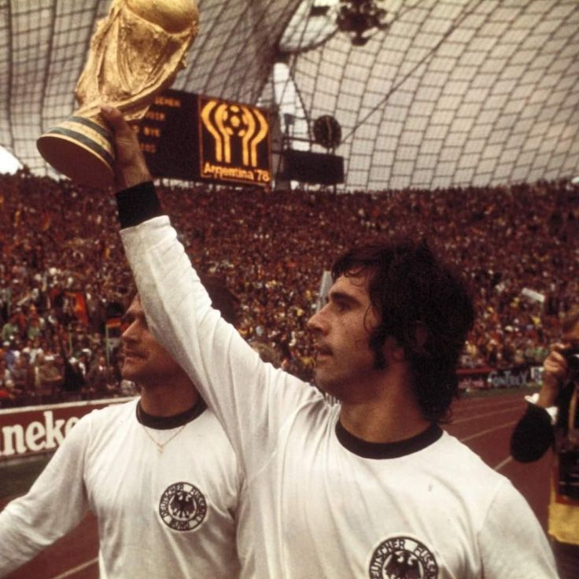
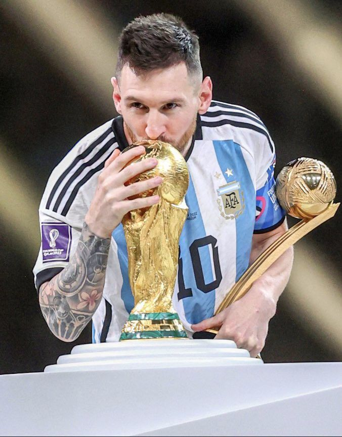

Top 5 máximos goleadores de la copa mundial FIFA
-
1. Miroslav Klose - Alemania
Máximo goleador del torneo, 16 goles en 24 partidos jugados (2002,2006,2010,2014).
-
2. Ronaldo Luís Nazário de Lima - Brasil

15 goles en 19 partidos jugados (1994,1998,2002,2006).
-
3. Gerd Muller - Alemania
14 goles en 13 partidos jugados (1970,1974).
-
4. Just Fontaine - Francia
13 goles en 6 partidos jugados (1958).
-
5. Lionel Messi - Argentina
13 goles en 26 partidos jugados (2006,2010,2014,2018,2022).